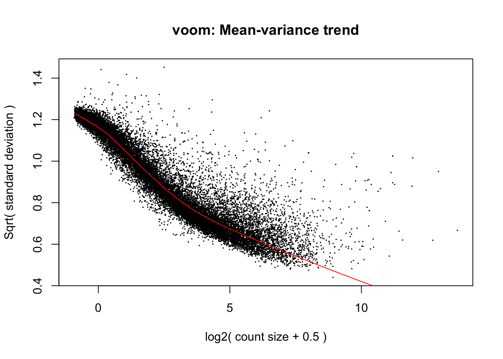
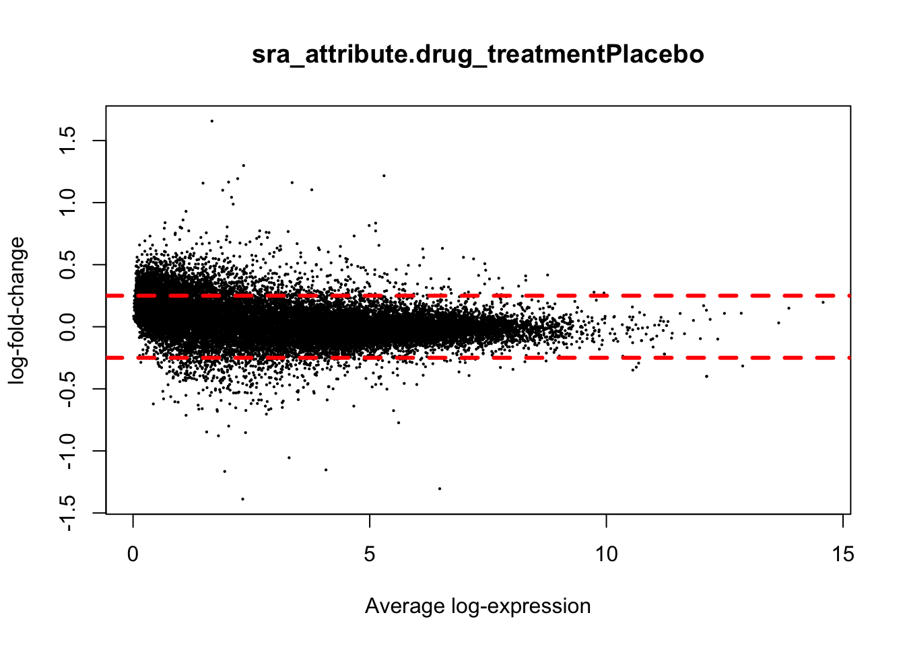
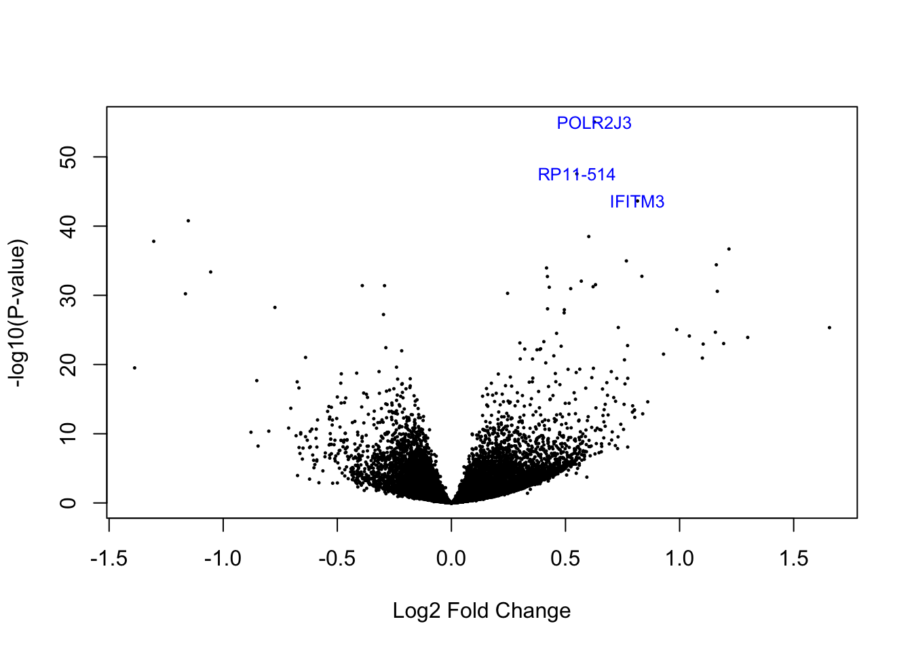
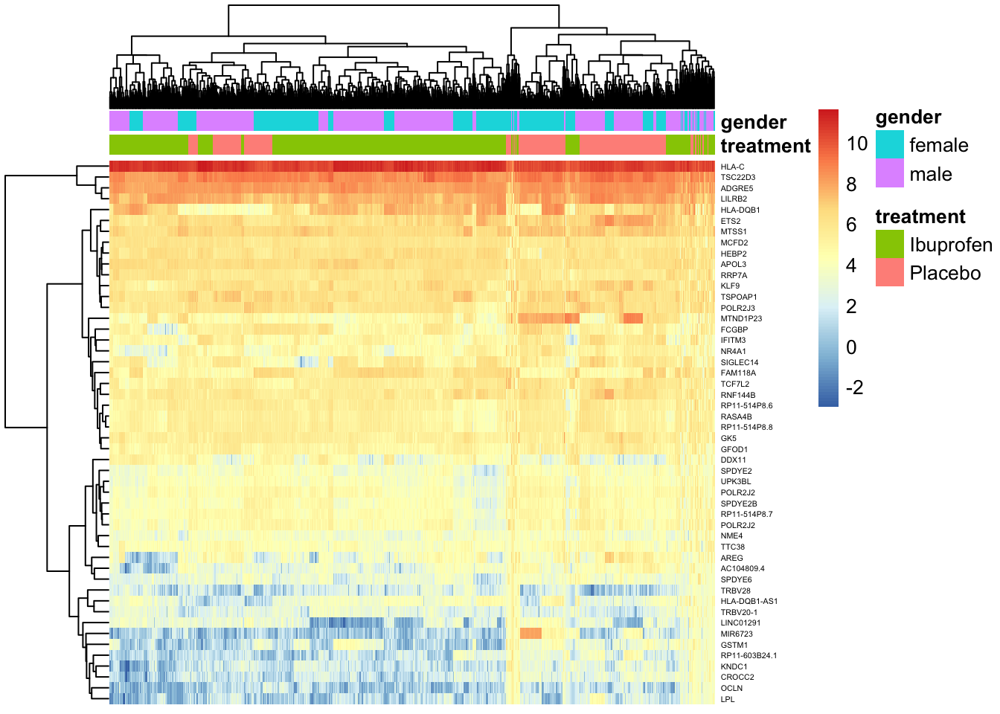
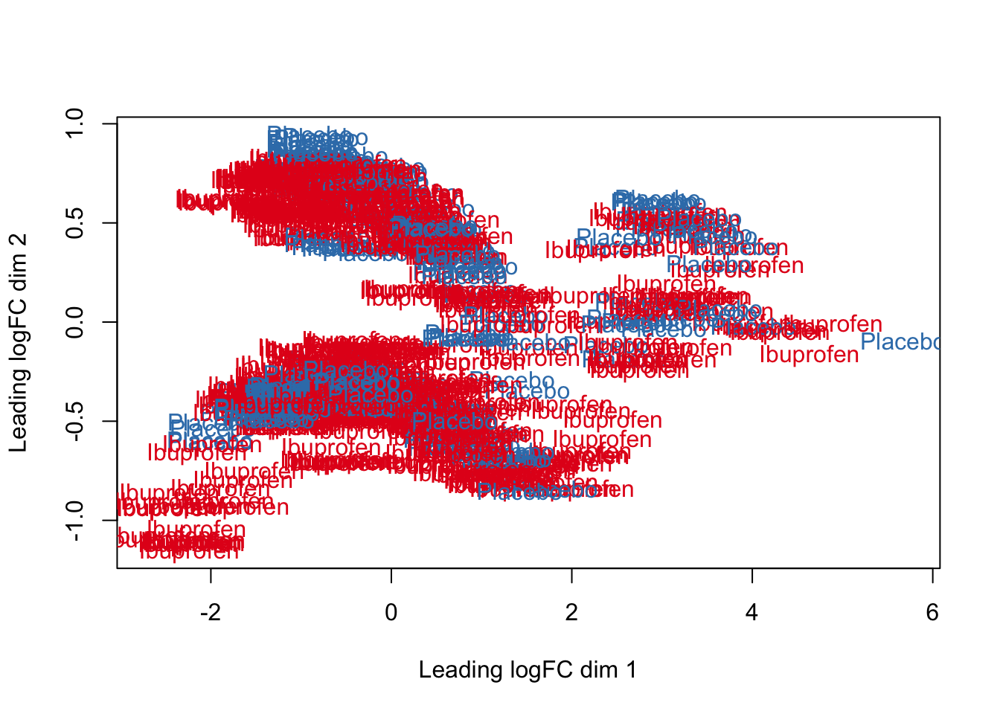
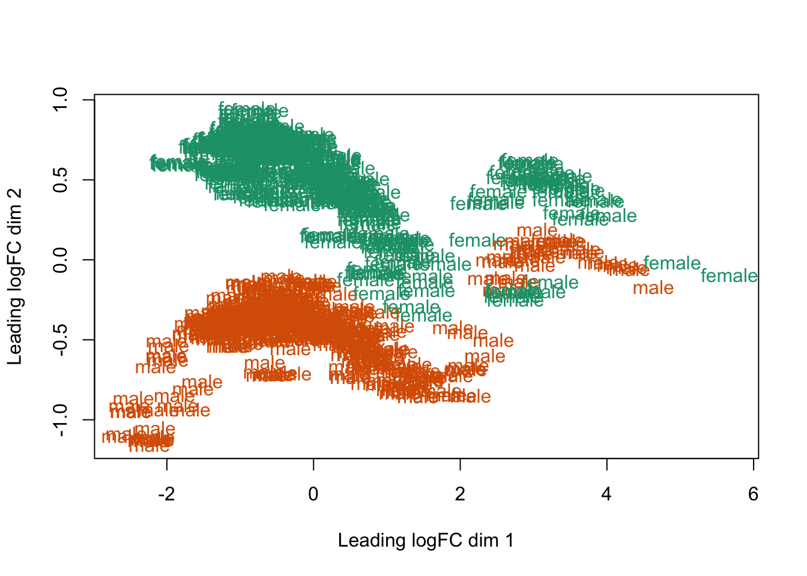
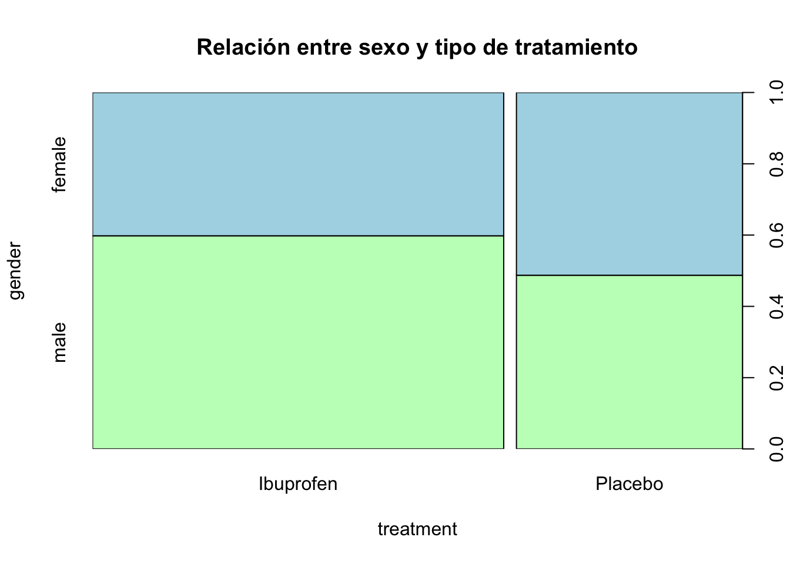

Chapter 6 Modelado estadístico
Se usará model.matrix() para modelar las dos categorías para el análisis de expresión diferencial.
mod <- model.matrix(~ sra_attribute.drug_treatment + sra_attribute.gender + assigned_gene_prop,
data = colData(rse_gene_SRP162774)
)
colnames(mod)## [1] "(Intercept)" "sra_attribute.drug_treatmentPlacebo"
## [3] "sra_attribute.gendermale" "assigned_gene_prop"## Verificar las posiciones de 1 y 0 respecto al estado de la categoría
head(rse_gene_SRP162774$sra_attribute.drug_treatment)## [1] Ibuprofen Ibuprofen Ibuprofen Ibuprofen Ibuprofen Ibuprofen
## Levels: Ibuprofen Placebohead(mod)## (Intercept) sra_attribute.drug_treatmentPlacebo
## SRR7911000 1 0
## SRR7911001 1 0
## SRR7911004 1 0
## SRR7911005 1 0
## SRR7911006 1 0
## SRR7911007 1 0
## sra_attribute.gendermale assigned_gene_prop
## SRR7911000 0 0.1599425
## SRR7911001 0 0.1586717
## SRR7911004 1 0.1445792
## SRR7911005 1 0.1348229
## SRR7911006 1 0.1340993
## SRR7911007 1 0.1421941print(rse_gene_SRP162774$sra_attribute.drug_treatment[17])## [1] Placebo
## Levels: Ibuprofen Placeboprint(mod[17])## [1] 1La siguiente gráfica ilustra el promedio de varianza en la expresión diferencial de los datos. A partir de esto podemos observar el aunque se ajustan al promedio, la desviación se elonga aproximadamente 0.8 unidades. Es necesario acercar a los genes lejanos a la línea roja.
vGene <- voom(dge, mod, plot = TRUE)
A partir de lo anterior, es necesario generar un modelo de regresión lineal para ajustar la expresión de los datos.Obtención del p-value por medio de la función eBayes.
eb_results <- eBayes(lmFit(vGene))
## Se configura el coef en 2, ya que ahí se encuentra la variable a evaluar (de referencia)
de_results <- topTable(
eb_results,
coef = 2,
number = nrow(rse_gene_SRP162774),
sort.by = "none"
)
dim(de_results)## [1] 26644 16head(de_results)## source type score phase gene_id
## ENSG00000223972.5 HAVANA gene 1735 NA ENSG00000223972.5
## ENSG00000278267.1 ENSEMBL gene 68 NA ENSG00000278267.1
## ENSG00000227232.5 HAVANA gene 1351 NA ENSG00000227232.5
## ENSG00000239945.1 HAVANA gene 1319 NA ENSG00000239945.1
## ENSG00000238009.6 HAVANA gene 3726 NA ENSG00000238009.6
## ENSG00000233750.3 HAVANA gene 3812 NA ENSG00000233750.3
## gene_type gene_name level
## ENSG00000223972.5 transcribed_unprocessed_pseudogene DDX11L1 2
## ENSG00000278267.1 miRNA MIR6859-1 3
## ENSG00000227232.5 unprocessed_pseudogene WASH7P 2
## ENSG00000239945.1 lincRNA RP11-34P13.8 2
## ENSG00000238009.6 lincRNA RP11-34P13.7 2
## ENSG00000233750.3 processed_pseudogene CICP27 1
## havana_gene tag logFC AveExpr
## ENSG00000223972.5 OTTHUMG00000000961.2 <NA> 0.13701793 2.2731940
## ENSG00000278267.1 <NA> <NA> 0.23074810 0.4182034
## ENSG00000227232.5 OTTHUMG00000000958.1 <NA> 0.17576637 4.5382390
## ENSG00000239945.1 OTTHUMG00000001097.2 overlapping_locus 0.08384809 0.3412740
## ENSG00000238009.6 OTTHUMG00000001096.2 overlapping_locus -0.27515583 1.2725651
## ENSG00000233750.3 OTTHUMG00000001257.3 pseudo_consens -0.22747778 1.4925440
## t P.Value adj.P.Val B
## ENSG00000223972.5 1.9554141 5.088928e-02 1.158491e-01 -4.468697
## ENSG00000278267.1 2.2368308 2.557794e-02 7.059237e-02 -3.616160
## ENSG00000227232.5 4.9873251 7.542802e-07 1.559629e-05 5.314978
## ENSG00000239945.1 0.7758086 4.380961e-01 5.542248e-01 -5.650885
## ENSG00000238009.6 -2.9770138 3.000356e-03 1.437280e-02 -1.890726
## ENSG00000233750.3 -2.5172333 1.202650e-02 4.066937e-02 -3.110197Evaluar p-value menor a 0.05
## Genes diferencialmente expresados entre ibuprofeno y placebo con FDR < 5%
table(de_results$adj.P.Val < 0.05)##
## FALSE TRUE
## 18165 8479La siguiente gráfica explica el cambio de expresión entre placebo e ibupofeno. Los valores positivos indican una expresión más alta en placebo y valores negativos indican mayor expresión en ibuprofeno.
## Visualizar resultados estadísticos
plotMA(eb_results, coef = 2)
abline(h = 0.25, col="red", lwd=3, lty=2)
abline(h = -0.25, col="red", lwd=3, lty=2)
El gráfico siguiente ilustra el logfold change en el eje x y el p-value en el eje y. Esto permite dilucidar los genes con mayor expresión y con mejor valor de p-value.
Los 3 genes con mayor expresión se resaltan en azul.
#Checar los genes en genecards
volcanoplot(eb_results, coef = 2, highlight = 3, names = de_results$gene_name)
El el siguiente heatmap podemos observar algunas clusterizaciones intermitentes para la clasificación de sexo. En la clasificación de tratamiento se observan un más grandes, lo que indica una buena relación en los datos. Respecto a los genes, sí es posible ver clusterización en relación a su nivel de expresión.
## Extracción de valores de genes de interés
exprs_heatmap <- vGene$E[rank(de_results$adj.P.Val) <= 50, ]
## Crear una tabla con información de las muestras
df <- as.data.frame(colData(rse_gene_SRP162774)[, c("sra_attribute.drug_treatment", "sra_attribute.gender")])
colnames(df) <- c("treatment", "gender")
## Cambiar ID a nombre de los genes
rownames(exprs_heatmap)## [1] "ENSG00000225972.1" "ENSG00000278791.1" "ENSG00000134184.12"
## [4] "ENSG00000148737.16" "ENSG00000171798.17" "ENSG00000142089.15"
## [7] "ENSG00000013573.16" "ENSG00000123358.19" "ENSG00000258732.1"
## [10] "ENSG00000103202.12" "ENSG00000005379.15" "ENSG00000123146.19"
## [13] "ENSG00000275395.4" "ENSG00000254415.3" "ENSG00000131042.14"
## [16] "ENSG00000180398.11" "ENSG00000204792.2" "ENSG00000233392.5"
## [19] "ENSG00000226321.5" "ENSG00000157557.11" "ENSG00000128284.19"
## [22] "ENSG00000189306.10" "ENSG00000100376.11" "ENSG00000075234.16"
## [25] "ENSG00000175066.15" "ENSG00000109321.10" "ENSG00000197822.10"
## [28] "ENSG00000145990.10" "ENSG00000137393.9" "ENSG00000204525.16"
## [31] "ENSG00000223534.1" "ENSG00000179344.16" "ENSG00000051620.10"
## [34] "ENSG00000260097.2" "ENSG00000170667.14" "ENSG00000272949.1"
## [37] "ENSG00000205238.9" "ENSG00000168255.19" "ENSG00000270249.1"
## [40] "ENSG00000267368.1" "ENSG00000205236.6" "ENSG00000173678.14"
## [43] "ENSG00000228049.7" "ENSG00000267645.5" "ENSG00000211747.3"
## [46] "ENSG00000211753.4" "ENSG00000175445.14" "ENSG00000170873.18"
## [49] "ENSG00000119138.4" "ENSG00000157514.16"findPositions <- which(rowRanges(rse_gene_SRP162774)$gene_id %in% rownames(exprs_heatmap))
rownames(exprs_heatmap) <- rowRanges(rse_gene_SRP162774)$gene_name[findPositions]
pheatmap(
exprs_heatmap,
cluster_rows = TRUE,
cluster_cols = TRUE,
show_rownames = TRUE,
show_colnames = FALSE,
annotation_col = df,
fontsize_row = 4
)
## Para colores
head(df)## treatment gender
## SRR7911000 Ibuprofen female
## SRR7911001 Ibuprofen female
## SRR7911004 Ibuprofen male
## SRR7911005 Ibuprofen male
## SRR7911006 Ibuprofen male
## SRR7911007 Ibuprofen male## Conviertiendo los grupos de tratamiento a colores
col.drug <- df$treatment
levels(col.drug) <- brewer.pal(nlevels(col.drug), "Set1")## Warning in brewer.pal(nlevels(col.drug), "Set1"): minimal value for n is 3, returning requested palette with 3 different levelsA pesar de la limpieza realizada a los datos, no es posible observar una clusterización referente al tipo de tratamiento en los niveles de expresión. Lo anterior, puede atribuirse a una baja calidad de la biblioteca de datos o a un nivel de expresión realmente bajo en ambas condiciones.
col.drug <- as.character(col.drug)
## MDS por grupos tratamiento
plotMDS(vGene$E, labels = df$treatment, col = col.drug)
Los siguientes gráficos sugieren una alta relación entre la respuesta a ibuprofeno ligada a los hombres, y la respuesta a placebo ligada a las mujeres. Sin embargo la clusterización no es tan clara para afirmar esta hipótesis.
## Conviertiendo los grupos de tratamiento a colores
col.sex <- df$gender
levels(col.sex) <- brewer.pal(nlevels(col.sex), "Dark2")## Warning in brewer.pal(nlevels(col.sex), "Dark2"): minimal value for n is 3, returning requested palette with 3 different levelscol.sex <- as.character(col.sex)
## MDS por grupos tratamiento
plotMDS(vGene$E, labels = df$gender, col = col.sex)
plot(df, main = 'Relación entre sexo y tipo de tratamiento', col = c('darkseagreen1', 'lightblue'))